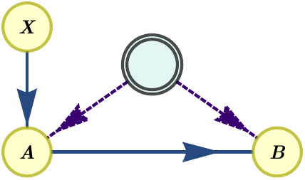

Examples and features
In this section we will showcase the different features of CausalInflation progressively through a series of examples.
Compatibility problems
One of the basic functionalities of CausalInflation is addressing compatibility problems of probability distributions with causal models. These were illustrated in the Tutorial section. Here we revisit briefly the examples, and complement them with further functionality, such as extraction of infeasibility certificates and rephrasing feasibility problems in optimization ones.
Example 1: Infeasibility of the 2PR distribution in the quantum tripartite line scenario
Let us begin by recalling the example considered in the Tutorial, namely the compatibility of the 2PR distribution,
with the tripartite line scenario, described by the following DAG

where the latent nodes represent sources of quantum systems. The program that determined the solution to this problem is the following
[1]:
from causalinflation import InflationProblem, InflationSDP
import numpy as np
tri_line = InflationProblem(dag={'rho_AB': ['A', 'B'],
'rho_BC': ['B', 'C']},
outcomes_per_party=(2, 2, 2),
settings_per_party=(2, 2, 2),
inflation_level_per_source=(2, 2))
sdp = InflationSDP(tri_line)
sdp.generate_relaxation('npa2')
def P_2PR(vis=1):
p = np.zeros((2, 2, 2, 2, 2, 2))
for a, b, c, x, y, z in np.ndindex(*p.shape):
p[a, b, c, x, y, z] = \
(1 + vis * (-1) ** (a + b + c + x*y + y*z)) / 8
return p
sdp.set_distribution(P_2PR())
sdp.solve()
sdp.status
[1]:
'infeasible'
The problem status is reported as infeasible. This means that in the quantum inflation where there are two copies of each source (because we defined inflation_levels_per_source=(2, 2)), no quantum states and measurements exist that can satisfy all the constraints implied by the scenario and the distribution. As a consequence of this, the 2PR distribution is proved to be incompatible with the quantum tripartite line scenario.
Certificate extraction
Since the feasibility problem is a semidefinite program, we can use Farkas’ lemma to find a certificate that witnesses the incompatibility. CausalInflation takes care of this automatically when solving the problem. The certificate will take the form of a polynomial inequality in the probabilities, \(\text{Poly}(p(a,b,c|x,y,z)) < 0\) . This means that any other distribution \(p'(a,b,c|x,y,z)\) that also satisfies the inequality, \(\text{Poly}(p'(a,b,c|x,y,z)) < 0\), is guaranteed also to lead to an infeasible SDP, and thus to a proof that it cannot be generated in the quantum triangle scenario.
[2]:
cert = sdp.certificate_as_probs()
cert
[2]:
This certificate evaluates, indeed, to a negative quantity when evaluated in the 2PR distribution, and to positive quantities in feasible distributions like the uniform one.
[3]:
# 2PR distribution
print(cert.subs({mon.symbol: val
for mon, val in sdp.known_moments.items()}))
# Uniform distribution
uniform = {mon.symbol: 1 / 2 ** mon.n_operators
for mon in sdp.known_moments.keys()
if mon.is_atomic}
print(cert.subs(uniform))
-0.00399999999999986
1.54800000000000
Feasibility as optimisation
Feasibility problems are numerically unstable due to problems with floating-point precision. A more numerically robust approach is to convert feasibility problems to optimisation problems. Instead of imposing that the moment matrix \(\Gamma\) of the SDP relaxation is positive semidefinite, which is prone to numerical instabilities, we instead solve the following problem:
where \(1\) is the identity matrix. This problem maximizes the smallest eigenvalue of \(\Gamma\), which is negative when \(\Gamma\) cannot be made positive-semidefinite (i.e., when calling status would return 'infeasible'), and positive otherwise.
This transformation is produced in CausalInflation simply by setting the flag feas_as_optim to True in the InflationSDP.solve() method. The resulting optimal \(\lambda\) is stored in InflationSDP.objective_value. This can be used, for example, for writing optimization problems on top of quantum inflation. Let us illustrate this with the computation of the critical
visibility of the 2PR distribution in the quantum tripartite line scenario:
[4]:
from causalinflation import InflationProblem, InflationSDP
from causalinflation.utils import bisect
import numpy as np
tri_line = InflationProblem(dag={'rho_AB': ['A', 'B'],
'rho_BC': ['B', 'C']},
outcomes_per_party=(2, 2, 2),
settings_per_party=(2, 2, 2),
inflation_level_per_source=(2, 2))
sdp = InflationSDP(tri_line)
sdp.generate_relaxation('npa2')
def P_2PR(vis=1):
p = np.zeros((2, 2, 2, 2, 2, 2))
for a, b, c, x, y, z in np.ndindex(*p.shape):
p[a, b, c, x, y, z] = \
(1 + vis * (-1) ** (a + b + c + x*y + y*z)) / 8
return p
def min_eigenvalue(vis):
sdp.set_distribution(P_2PR(vis))
sdp.solve(feas_as_optim=True)
return sdp.objective_value
bisect(min_eigenvalue, 0, 1, verbose=True)
min_eigenvalue(0.5) = 4.272e-09
min_eigenvalue(0.75) = -0.04709
min_eigenvalue(0.625) = -0.02075
min_eigenvalue(0.5625) = -0.009571
min_eigenvalue(0.5312) = -0.004592
min_eigenvalue(0.5156) = -0.00226
min_eigenvalue(0.5078) = -0.001123
min_eigenvalue(0.5039) = -0.0005598
min_eigenvalue(0.502) = -0.0002795
min_eigenvalue(0.501) = -0.0001396
min_eigenvalue(0.5005) = -6.978e-05
min_eigenvalue(0.5002) = -3.488e-05
min_eigenvalue(0.5001) = -1.744e-05
min_eigenvalue(0.5001) = -8.719e-06
[4]:
0.500030517578125
We recover a critical visibility that is consistent with the known critical visibility of the 2PR distribution in the quantum tripartite-line scenario, namely \(v>\frac{1}{2}\) [1]. Higher inflations or higher levels in the NPA hierarchy are expected to get closer to the correct value, \(v=\frac{1}{2}\), and potentially reaching it, as the hierarchy increases.
Characterization of classical correlations
With quantum inflation, we can also optimize over relaxations of the sets of distributions compatible with DAGs where the sources represent classical shared randomness. This works by imposing at the level of the SDP relaxation the constraint that all operators defining the moments commute [2]. The effect of this constraint is that previously different variables in the moment matrix become equal. For example, \(\langle A_{x} A_{x'} \rangle \neq \langle A_{x'} A_{x} \rangle\) in general in quantum mechanics, but if we assume that the sources distribute classical shared randomness and thus all operators in the inflation commute, then they become equal.
To enable this feature one simply adds the flag commuting=True when instantiating the InflationSDP object.
Example 2: Critical visibility of the 2PR distribution in the classical tripartite-line scenario
As an example, we find the critical visibility of the \(P_{\text{2PR}}\) distribution from Example 1, but in the classical tripartite line scenario with a second order inflation:
[5]:
from causalinflation import InflationProblem, InflationSDP
from causalinflation.utils import bisect
import numpy as np
tri_line = InflationProblem(dag={'rho_AB': ['A', 'B'],
'rho_BC': ['B', 'C']},
outcomes_per_party=(2, 2, 2),
settings_per_party=(2, 2, 2),
inflation_level_per_source=(2, 2))
sdp = InflationSDP(tri_line, commuting=True)
sdp.generate_relaxation('local1')
def P_2PR(vis=1):
p = np.zeros((2, 2, 2, 2, 2, 2))
for a, b, c, x, y, z in np.ndindex(*p.shape):
p[a, b, c, x, y, z] = \
(1 + vis * (-1) ** (a + b + c + x*y + y*z)) / 8
return p
def min_eigenvalue(vis):
sdp.set_distribution(P_2PR(vis))
sdp.solve(feas_as_optim=True)
return sdp.objective_value
bisect(min_eigenvalue, 0, 1)
[5]:
0.353546142578125
This relaxation of the set of distributions classically simulable in the tripartite line scenario certifies then the incompatibility of the \(P_{\text{2PR}}\) distribution for \(v>0.3536\). This does not completely certify incompatibility down to the known critical threshold of \(v_{\text{crit}}=\frac{1}{4}\), but it is expected that tighter relaxations (which are computationally more expensive) might recover this value. For instance, [3, Sec. VII.A.3] reports a critical value \(v_{\text{crit}}\leq 0.328\) using an inflation with three copies per source.
Note that the specification of the columns of the moment matrix is 'local1'. This represents the so-called “local levels”, which are a different choice of generating set for the moment matrix. Whereas NPA level \(n\) is the \(n\)-times cartesian product (without duplicated elements) of the set of measurements of the parties together with the identity, local level \(n\) refers to a generating set with all the products with up to \(n\) operators per party. For more details, see
[3].
Optimization of Bell operators
One can use inflation techniques to not only run causal compatibility problems, but also to optimize over the generated relaxation, and therefore get upper bounds on the values of various Bell operators.
Example 3. Upper bounds on Mermin’s inequality
Let us consider Mermin’s inequality, written in the correlator form as follows:
where correlators are defined as
It is known that the algebraic maximum of 4 is achieved in the tripartite scenario when using genuinely tripartite entangled quantum states. However, this is not the case [3] when restricting to states that can be generated in the following DAG, called the quantum triangle scenario:
Let us find this result with CausalInflation:
[6]:
from causalinflation import InflationProblem, InflationSDP
triangle = InflationProblem(
dag={'rho_AB': ['A', 'B'],
'rho_BC': ['B', 'C'],
'rho_AC': ['A', 'C']},
outcomes_per_party=(2, 2, 2),
settings_per_party=(2, 2, 2),
inflation_level_per_source=(2, 2, 2)
)
sdp = InflationSDP(triangle)
sdp.generate_relaxation('npa2')
mmnts = sdp.measurements
A0, B0, C0, A1, B1, C1 = (1 - 2*mmnts[party][0][setting][0]
for setting in range(2)
for party in range(3))
sdp.set_objective(A1*B0*C0 + A0*B1*C0 + A0*B0*C1 - A1*B1*C1)
sdp.solve()
sdp.objective_value
[6]:
3.999999981240686
We get a value that is within numerical precision the algebraic maximum of 4. To improve on this result, we will need to do a tighter SDP relaxation.
Customising the generating set for the semidefinite relaxation
To get a tighter SDP relaxation, we will add more monomials to the generating set. Namely, we will use (as indicated in [3]) the union of the monomials corresponding to NPA level 2 and local level 1.
In order to do so, we use the built-in method InflationSDP.build_columns(), which admits specifying levels in popular hierarchies (such as NPA and local levels) using a string-based notation.
[7]:
from causalinflation import InflationProblem, InflationSDP
triangle = InflationProblem(
dag={'rho_AB': ['A', 'B'],
'rho_BC': ['B', 'C'],
'rho_AC': ['A', 'C']},
outcomes_per_party=(2, 2, 2),
settings_per_party=(2, 2, 2),
inflation_level_per_source=(2, 2, 2)
)
sdp = InflationSDP(triangle)
npa2 = sdp.build_columns('npa2')
local1 = sdp.build_columns('local1')
npa2_union_local1 = set(npa2).union(set(local1))
sdp.generate_relaxation(list(npa2_union_local1))
mmnts = sdp.measurements
A0, B0, C0, A1, B1, C1 = (1 - 2*mmnts[party][0][setting][0]
for setting in range(2)
for party in range(3))
sdp.set_objective(A1*B0*C0 + A0*B1*C0 + A0*B0*C1 - A1*B1*C1)
sdp.solve()
sdp.objective_value
[7]:
3.085044522904397
After running the above, we can certify then that the Mermin inequality cannot have a value larger than \(3.085\) for the quantum triangle causal scenario, recovering the result in [3].
Standard NPA hierarchy
If the DAG corresponds to a single global shared source scenario, then doing an inflation does not grant any advantage. In this case, the semidefinite programs are those to the standard Navascués-Pironio-Acín hierarchy [4].
Example 4: Critical visibility of the PR box in the standard Bell scenario with quantum sources
Let us recover the critical visibility of \(v_{\text{crit}}=\frac{1}{\sqrt{2}}\) for a Popeschu-Rohrlich box [5].
[8]:
from causalinflation import InflationProblem, InflationSDP
from causalinflation.utils import bisect
import numpy as np
bellscenario = InflationProblem(dag={'rho_AB': ['A', 'B']},
outcomes_per_party=(2, 2),
settings_per_party=(2, 2))
sdp = InflationSDP(bellscenario)
sdp.generate_relaxation('npa1')
def P_PRbox(vis=1):
p = np.zeros((2, 2, 2, 2))
for a, b, x, y in np.ndindex(*p.shape):
if (x, y) == (1, 1):
if a != b:
p[a, b, x, y] = 1 / 2
else:
if a == b:
p[a, b, x, y] = 1 / 2
return vis * p + (1 - vis) * np.ones(p.shape) / 2 ** 2
def min_eigenvalue(vis):
sdp.set_distribution(P_PRbox(vis))
sdp.solve(feas_as_optim=True)
return sdp.objective_value
v_crit = bisect(min_eigenvalue, 0, 1, eps=5e-5)
print('Critical visibility:', v_crit, '\n')
sdp.set_distribution(P_PRbox(v_crit))
sdp.solve()
cert = sdp.certificate_as_probs(chop_tol=1e-3,
round_decimals=3)
cert
Critical visibility: 0.7071075439453125
[8]:
Notice that the dual certificate that we extract in correlator form is very close to the well-known CHSH inequality tangent to the quantum set of correlations, modulo a global factor of 2. We can see that this is the case by readily plugging the certificate as an objective function to optimize:
[9]:
sdp.reset('values')
sdp.set_objective(2*cert, direction='max')
sdp.solve()
sdp.objective_value
[9]:
2.8267433967756332
Feasibility with limited information
Sometimes, one does not have access to a complete probability distribution but only to certain marginals. In this case, one can specify only particular values for monomials in an InflationSDP via the use of the function InflationSDP.set_values().
Example 5: Eavesdropped quantum repeater
An important example is the the analysis of cryptographic scenarios, where the honest parties may know their joint distribution but they cannot know their joint distribution together with a potential adversary. One simple such scenario is considered in [3, Sec. VII]. This scenario considers the quantum repeater/entanglement swapping experiment from Example 1 but with a hidden adversary, Eve, which is eavesdropping the sources \(\rho_{AB}\) and \(\rho_{BC}\) in an attempt to extract information about the secret key Alice and Charlie are trying to establish. In this scenario one would want to estimate how much information Eve can extract about the secret key. In the following, we implement this example within CausalInflation:
[10]:
from causalinflation import InflationSDP, InflationProblem
import numpy as np
InfProb = InflationProblem(dag={'rhoABE': ['A', 'B', 'E'],
'rhoBCE': ['B', 'C', 'E']},
outcomes_per_party=(2, 4, 2, 2),
settings_per_party=(2, 1, 2, 1),
inflation_level_per_source=(2, 2),
order=['A', 'B', 'C', 'E'])
InfSDP = InflationSDP(InfProb)
InfSDP.generate_relaxation(
InfSDP.build_columns('local1', max_monomial_length=3)
)
meas = InfSDP.measurements
A0 = meas[0][0][0][0]
C0 = meas[2][0][0][0]
E0 = meas[3][0][0][0]
def P_ABC(vis=1):
p = np.zeros((2, 4, 2, 2, 1, 2))
for a, b, c, x, y, z in np.ndindex(*p.shape):
b0, b1 = np.unravel_index(b, (2, 2))
p[a, 2*b1 + b0, c, x, y, z] = 1 / 2**4 * \
(1 + \
vis**2*(-1)**(a+c)*(((-1)**b0+(-1)**(b1+x+z))/2)
)
return p
for vis in np.linspace(1, 0.85, 16):
p = P_ABC(vis)
p0 = np.sum(p[0, :, 0, 0, 0])
InfSDP.set_objective(A0*C0*E0 / p0 - E0)
known_values = {}
# 3 body terms
for a, b, c, x, y, z in np.ndindex(1, 3, 1, 2, 1, 2):
known_values[meas[0][0][x][a]
*meas[1][0][y][b]
*meas[2][0][z][c]] = p[a, b, c, x, y, z]
# 2 body terms
for a, b, x, y in np.ndindex(1, 3, 2, 1):
known_values[meas[0][0][x][a]
*meas[1][0][y][b]
] = np.sum(p[a, b, :, x, y, 0])
for a, c, x, z in np.ndindex(1, 1, 2, 2):
known_values[meas[0][0][x][a]
*meas[2][0][z][c]
] = np.sum(p[a, :, c, x, 0, z])
for b, c, y, z in np.ndindex(3, 1, 1, 2):
known_values[meas[1][0][y][b]
*meas[2][0][z][c]
] = np.sum(p[:, b, c, 0, y, z])
# 1 body terms
for a, x in np.ndindex(1, 2):
known_values[meas[0][0][x][a]] \
= np.sum(p[a, :, :, x, 0, 0])
for b, y in np.ndindex(3, 1):
known_values[meas[1][0][y][b]] \
= np.sum(p[:, b, :, 0, y, 0])
for c, z in np.ndindex(1, 2):
known_values[meas[2][0][z][c]] \
= np.sum(p[:, :, c, 0, 0, z])
InfSDP.set_values(known_values)
InfSDP.solve() # It takes a while to solve
# print(vis, InfSDP.objective_value)
After running the code above and plotting the curve:
we recover the correct bounds from [3].
Example 6: Device independent entanglement certification
In this example we are going to combine a few of the tools we have seen so far. On one hand, we will use InflationSDP.set_values() to fix only certain values of our moment matrix. On the other, we will set the flag commuting to True when defining InflationSDP in order to characterize relaxations of the set of distributions that can be generated when the parties have access to global shared randomness. The goal will be to reproduce the results of
[4] regarding efficient device-independent certifications of entanglement in many-body systems. Concretely, we will compute the noise robustness of the W state of 7 qubits using CausalInflation. For this, we use tools from the Hierarchy for nonlocality detection Github repository. This example also requires the use of the QuTiP Python package to simulate
measurements on the W state.
[11]:
from causalinflation import InflationSDP, InflationProblem
from causalinflation.utils import bisect
from qutip import (basis, expect, ket2dm, qeye, sigmax,
sigmaz, tensor)
import numpy as np
N = 7 # How many spins in the system
outcomes = [2] * N # 2 measurements per site
settings = [2] * N # 2 outcomes per site
bell = InflationProblem(outcomes_per_party=outcomes,
settings_per_party=settings)
sdp = InflationSDP(bell, commuting=True)
sdp.generate_relaxation('npa2')
meas = sdp.measurements
def get_W_reduced(N):
"""Generates the reduced four-body state for the N-partite
W state. Since the W state is symmetric, it is independent
of the choice of the four parties that one considers.
Source:
https://github.com/FlavioBaccari/Hierarchy-for-nonlocality-detection
"""
def get_W_state(N):
"""Generates the density matrix for the N-partite W
state."""
state = tensor([basis(2, 1)]
+ [basis(2, 0) for _ in range(N - 1)])
for i in range(1, N):
components = [basis(2, 0) for _ in range(N)]
components[i] = basis(2, 1)
state += tensor(components)
return 1. / N**0.5 * state
w = ket2dm(get_W_state(4))
rest = ket2dm(tensor([basis(2, 0) for _ in range(4)]))
return 4. / N * w + (N - 4.) / N * rest
W_state = get_W_reduced(N)
W_operators = [[[v.proj() for v in meas.eigenstates()[1]]
for meas in [sigmax(), sigmaz()]]
for p in range(N)]
noise = tensor([qeye(2) for _ in range(4)]) / 16
def min_eigenvalue(vis):
# The W state is independent of the choice of the four
# parties considered. We use this to simplify the
# calculation of the reduced moments.
known_values = {}
for if_p_involved in np.ndindex(*([2]*N)):
if sum(if_p_involved) == 0:
known_values[1] = 1
elif sum(if_p_involved) <= 4:
p_involved = [p for p in range(N)
if if_p_involved[p]]
for settings in np.ndindex(*[settings_per_party[p]
for p in p_involved]):
for outcomes in np.ndindex(
*[outcomes_per_party[p] - 1
for p in p_involved]):
sdpvar = np.prod(
[meas[p][0][x][a]
for p, x, a in zip(p_involved,
settings,
outcomes)])
projectors = \
[W_operators[p][x][a]
for p, x, a in zip(p_involved,
settings,
outcomes)]
for i in range(4-sum(if_p_involved)):
# Complete with identity projectors
projectors.append(qeye(2))
known_values[sdpvar] = \
expect(tensor(projectors),
vis * W_state + (1-vis) * noise)
sdp.set_values(known_values)
sdp.solve(feas_as_optim=True)
return sdp.objective_value
bisect(min_eigenvalue, 0, 1)
[11]:
0.723358154296875
We correctly recover the results for the W state visibility of \(\nu_{\textrm{crit}}\approx 0.723\) for \(N=7\) in [4, Table 1].
Non-negative operators as generating monomials
For the generation of the semidefinite programming relaxation, besides NPA levels and local levels, InflationSDP.build_columns() also accepts as input strings of the form 'physicalN'. When this is done, the set of monomials used for creating the moment matrix is the subset of local level \(N\) formed by all the monomials which have non-negative expectation value under any quantum state. Using these monomials as generators of the moment matrix is beneficial because the condition that
the moment matrix is positive-semidefinite readily implies that the corresponding expectation values represent probabilities with appropriate normalization constraints. In general, and as we will see below, this turns out to provide tighter characterizations with notably fewer computational resources.
Example 7: Critical visibility of the W distribution with the hierarchy of non-negative monomials
As an application, we show how we can recover the critical visibility \(v_{\text{crit}}\approx 0.8038\) of the W distribution, defined as
in the quantum triangle scenario. In [4] this result was obtained using the second-order quantum inflation of the triangle scenario, and the generating set corresponding to the monomials of local level 2 which had a maximum of 4 operators. This corresponds to a set of \(1175\) operators, and thus a moment matrix of size \(1175\times 1175\). We now shall see that we can obtain the same result using only the generating monomials which are non-negative:
[12]:
from causalinflation import InflationProblem, InflationSDP
from causalinflation.utils import bisect
import numpy as np
triangle = InflationProblem(
dag={'rho_AB': ['A', 'B'],
'rho_BC': ['B', 'C'],
'rho_AC': ['A', 'C']},
outcomes_per_party=(2, 2, 2),
settings_per_party=(1, 1, 1),
inflation_level_per_source=(2, 2, 2)
)
sdp = InflationSDP(triangle)
nonneg = sdp.build_columns('physical2', max_monomial_length=4)
print('Number of operators:', len(nonneg))
sdp.generate_relaxation(nonneg)
def P_W(vis=1):
p = np.zeros((2, 2, 2, 1, 1, 1))
for a, b, c, x, y, z in np.ndindex(*p.shape):
if a + b + c == 1:
p[a, b, c, x, y, z] = 1 / 3
return vis * p + (1 - vis) * np.ones(p.shape) / 2 ** 3
def min_eigenvalue(vis):
sdp.set_distribution(P_W(vis))
sdp.solve(feas_as_optim=True)
return sdp.objective_value
bisect(min_eigenvalue, 0, 1)
Number of operators: 287
[12]:
0.803863525390625
We recover the same critical visibility of \(v_{\text{crit}}\approx 0.8039\) with a moment matrix of size \(287\times 287\) as opposed to \(1175\times 1175\), which leads to a significant gain in performance.
Linearized polynomial identification constraints
In order to increase the tightness of the relaxations, one can impose in the semidefinite programs the so-called linearize polynomial identification (LPI) constraints [6]. These are proportionality constraints between different entries of the moment matrix, which arise due to the fact that there exist disconnected sets of parties in the inflation graphs.
As a simplified example, consider the moment \(\langle A^{110}_{xa} B^{202}_{x'a'} B^{201}_{yb} \rangle\) in an inflation of the triangle scenario, where the superindices indicate the copies of the sources that arrive to each party, and the value 0 means that the party does not measure the corresponding source. For example, \(B^{201}_{yb}\) represents Bob measuring outcome \(b\) of setting \(y\) on copy 2 of \(\rho_{AB}\) and copy 1 of \(\rho_{BC}\). Notice that because of the non-overlapping support of some of the moments, the moment factorises as follows:
The moment \(\langle A^{110}_{xa} \rangle\) is known to be equal to \(p_A(a|x)\), but \(\langle B^{202}_{x'a'} B^{201}_{yb} \rangle\) is unknown. Therefore, in compatibility problems where \(p_A(a|x)\) is associated a number, a linear proportionality relationship between the variables \(\langle A^{110}_{xa} B^{202}_{x'a'} B^{201}_{yb} \rangle\) and \(\langle B^{202}_{x'a'} B^{201}_{yb} \rangle\) can be imposed, the proportionality constant being \(p_A(a|x)\).
Proportionality constraints of these form can be automatically implemented by setting use_lpi_constraints to True when using InflationSDP.set_values() or InflationSDP.set_distribution().
Example 8: Critical visibility of the W distribution with LPI constraints
We will now show how using LPI constraints lead to tighter relaxations. Let us revisit Example 7 and insert the new constraints:
[13]:
from causalinflation import InflationProblem, InflationSDP
from causalinflation.utils import bisect
import numpy as np
triangle = InflationProblem(
dag={'rho_AB': ['A', 'B'],
'rho_BC': ['B', 'C'],
'rho_AC': ['A', 'C']},
outcomes_per_party=(2, 2, 2),
settings_per_party=(1, 1, 1),
inflation_level_per_source=(2, 2, 2)
)
sdp = InflationSDP(triangle)
cols = sdp.build_columns('physical2', max_monomial_length=4)
sdp.generate_relaxation(cols)
def P_W(vis=1):
p = np.zeros((2, 2, 2, 1, 1, 1))
for a, b, c, x, y, z in np.ndindex(*p.shape):
if a + b + c == 1:
p[a, b, c, x, y, z] = 1 / 3
return vis * p + (1 - vis) * np.ones(p.shape) / 2 ** 3
def min_eigenvalue(vis):
sdp.set_distribution(P_W(vis), use_lpi_constraints=True)
sdp.solve(feas_as_optim=True)
return sdp.objective_value
bisect(min_eigenvalue, 0, 1, verbose=False)
[13]:
0.764984130859375
The critical value for the noise that we achieve, \(v_{\text{crit}}=0.7650\), is lower than the critical value for the noise that we achieved in Example 7, \(v_{\text{crit}}=0.8039\).
Warning! The tradeoff of using LPI constraints is that the dual certificate is no longer valid for other distributions. We can still certify incompatibility of a specific distribution \(P_0\) with a certain causal model with the extracted certificate \(\text{Poly}_{P_0}(P_0)>0\) when using LPI constraints, but when checking other distributions \(P_1\) with the same certificate, satisfying he inequality \(\text{Poly}_{P_0}(P_1)>0\) no longer guarantees that \(P_1\) is also incompatible with the same causal structure. For a more detailed discussion, see [6].
Non-network scenarios
So far all examples have dealt with network-type DAGs. These are bipartite DAGs where one layer of visible nodes (representing settings) and latent nodes (representing sources) are parents to children in another layer of visible nodes that represent the parties’ outcomes. The tripartite-line DAG in Example 1 and the triangle DAG in Example 3 are both illustration of network-type DAGs. One could consider more complicated scenarios, like a DAG where the outcome of a party is sent as input to the measurement performed by another party. For such situations, it is possible to find a network DAG such that restrictions of the distributions compatible with it characterize the distributions compatible with the non-network DAG [3]. CausalInflation can easily handle these scenarios in the same workflow as for network scenarios.
Example 9: Feasibility and optimization in the instrumental scenario
The simplest causal scenario that exhibits a gap between classical, quantum and post-quantum correlations is the instrumental scenario [7]. The instrumental scenario features two parties, \(A\) and \(B\), that share a common source of correlations. While party \(A\) can choose between different measurement settings, \(x\), party \(B\). However, party \(A\) is allowed to signal their output to party \(B\). The scenario is depicted as a DAG in Figure a) below. The associated network DAG is depicted in Figure b). The set of distributions \(p(a,b|x)\) compatible with the non-network DAG of Figure a) is equivalent to the set of distributions \(p(a,b|x,y{=}a)\) compatible with the network DAG of Figure b).

|
|
CausalInflation, upon inputting Figure a) as the DAG for an InflationProblem, automatically transforms the scenario into that of Figure b) and adapts the setting of values and bounds to only process those pertinent to the original scenario, letting the rest free. In the network scenario, the input cardinality of children increases to accomodate the different output values of the parent nodes. For the instrumental scenario, this means that if party \(B\) had an input \(y\) in the
instrumental scenario, in the equivalent network it would have an input \(y'=(y,a)\). The attribute InflationProblem.effective_to_parent_settings stores the mapping between the effective settings in the network equivalent scenario and the actual setting and the other parties’ outcomes that are used as input in the non-network scenario.
As illustrations, let us calculate the critical visibility for the following distribution:
in the quantum instrumental scenario, and calculating classical and quantum bounds for Bonet’s operator:
[14]:
from causalinflation import InflationProblem, InflationSDP
from causalinflation.utils import bisect
from sympy import Symbol as Sym
import numpy as np
prob = InflationProblem(dag={'rhoAB': ['A', 'B'],
'A': ['B']},
outcomes_per_party=(2, 2),
settings_per_party=(3, 1))
sdp = InflationSDP(prob)
sdp.generate_relaxation('local1')
def P(noise):
def f(x, a):
return x*(2 - x)*a + 1/2*x*(x - 1)*(a + 1) % 2
p = np.zeros((2, 2, 3, 1))
for a, b, x, y in np.ndindex(*p.shape):
if b == (a + f(x, a)) % 2:
p[a, b, x, y] = 1 / 2
return noise * p + (1 - noise) * np.ones(p.shape) / 4
def min_eigenvalue(vis):
sdp.set_distribution(P(vis))
sdp.solve(feas_as_optim=True)
return sdp.objective_value
v_crit = bisect(min_eigenvalue, 0, 1)
print('Critical visibility:', v_crit)
objective = Sym('pAB(00|00)')
objective += Sym('pA(1|0)') - Sym('pAB(10|00)') # p(11|0)
objective += Sym('pAB(00|10)') + Sym('pAB(10|10)') # pB(0|1)
objective += Sym('pA(0|2)') - Sym('pAB(00|20)') # p(01|2)
sdp = InflationSDP(prob, commuting=True)
sdp.generate_relaxation('local1')
sdp.set_objective(objective)
sdp.solve()
print(f'Bonet Bell operator ≤ {sdp.objective_value:.4f} '
+ '(Classical)')
sdp = InflationSDP(prob)
sdp.generate_relaxation('local1')
sdp.set_objective(objective)
sdp.solve()
print(f"Bonet Bell operator ≤ {sdp.objective_value:.4f} "
+ "(Quantum)")
Critical visibility: 0.716400146484375
Bonet Bell operator ≤ 2.0000 (Classical)
Bonet Bell operator ≤ 2.2071 (Quantum)
Note that we have had to write \(p(a, b{=}1\vert x) = p(a \vert x) - p(a, b{=}0\vert x)\) explicitly. This is due to the fact that, internally, CausalInflation works with Collins-Gisin notation [8], and therefore some probability elements must be written in terms of the available ones. This is no different to the processing that we had to do in Example 3.
Feasibility based on distribution supports
There is a lot of literature regarding the violation of Bell-type inequalities as certification of non-classical behavior. These inequalities put constraints on combinations of probability elements. There exist even simpler certifications of non-classicality, that instead rely on possibilistic arguments: they only assume whether certain events are possible (positive probability) or impossible (zero probability) in order to reach a contradiction. These are known as Hardy-type paradoxes [9].
CausalInflation can handle proofs of non-classicality and non-quantumness in arbitrary DAGs based on possibilistic arguments. It does so by assessing whether a quantum inflation (with commuting or non-commuting operators, respectively) exists where the probability elements inside the support are constrained to lie in the interval \([1,\infty)\) while those outside the support are given the value \(0\). This represents a rescaled version of a standard quantum inflation moment matrix, \(\Gamma^*=\Gamma/\epsilon\), that does not suffer of floatin-point instabilities when determining if a probability element is outside the support or has assigned a very small value. To get back the original moment matrix \(\Gamma\), which contains probabilities as some of its cells, one just needs to divide \(\Gamma^*\) by the numerical value in its top-left corner, which corresponds to the rescaled value of the expectation value for the identity, \(\langle 1 \rangle^*=1/\epsilon\).
In order to deal with possibilistic feasibility problems, one must set the argument supports_problem=True when instantiating InflationSDP. Optimization of objective functions is not possible when assessing the feasibility of distribution supports.
Example 10: Impossible distributions in the quantum instrumental scenario
As an example, let us show that no distribution that has the same support as the distribution from Example 9 can be generated in the quantum instrumental scenario:
[15]:
from causalinflation import InflationProblem, InflationSDP
import numpy as np
prob = InflationProblem(dag={'rhoAB': ['A', 'B'],
'A': ['B']},
outcomes_per_party=(2, 2),
settings_per_party=(3, 1))
sdp = InflationSDP(prob, supports_problem=True)
sdp.generate_relaxation('local1')
def P(noise):
def f(x, a):
return x*(2 - x)*a + 1/2*x*(x - 1)*(a + 1) % 2
p = np.zeros((2, 2, 3, 1))
for a, b, x, y in np.ndindex(*p.shape):
if b == (a + f(x, a)) % 2:
p[a, b, x, y] = 1 / 2
return noise * p + (1 - noise) * np.ones(p.shape) / 4
sdp.set_distribution(P(1))
sdp.solve()
sdp.status
[15]:
'infeasible'
References
[1] C. Branciard, D. Rosset, N. Gisin, and S. Pironio, Bilocal versus non-bilocal correlations in entanglement swapping experiments, Phys. Rev. A 85, 032119 (2012), arXiv:1112.4502.
[2] F. Baccari, D. Cavalcanti, P. Wittek, and A. Acín, Efficient Device-Independent Entanglement Detection for Multipartite Systems, Phys. Rev. X 7, 021042 (2017), arXiv:1612.08551.
[3] E. Wolfe, A. Pozas-Kerstjens, M. Grinberg, D. Rosset, A. Acín, and Miguel Navascués, Quantum Inflation: A General Approach to Quantum Causal Compatibility, Phys. Rev. X 11, 021043 (2021), arXiv:1909.10519.
[4] M. Navascués, S. Pironio, and A. Acín, A convergent hierarchy of semidefinite programs characterizing the set of quantum correlations, New J. Phys. 10, 073013, arXiv:0803.4290.
[5] S. Popescu and D. Rohrlich, Quantum nonlocality as an axiom, Found. Phys. 24, 379–385 (1994), arXiv:quant-ph/9508009.
[6] A. Pozas-Kerstjens, N. Gisin, and M.-O. Renou, Proofs of network quantum nonlocality aided by machine learning, arXiv:2203.16543.
[7] T. van Himbeeck, J. Bohr Brask, S. Pironio, R. Ramanathan, A. Belén Sainz, and E. Wolfe, Quantum violations in the Instrumental scenario and their relations to the Bell scenario, Quantum 3, 186 (2019), arXiv:1804.04119.
[8] D. Collins and N. Gisin, A Relevant Two Qubit Bell Inequality Inequivalent to the CHSH Inequality, J. Phys. A: Math. Gen. 37, 1775 (2004), arXiv:quant-ph/0306129.
[9] S. Mansfield and T. Fritz., Hardy’s Non-locality Paradox and Possibilistic Conditions for Non-locality, Found. Phys. 42, 709–719 (2012), arXiv:1105.1819.
[16]:
import causalinflation, qutip
causalinflation.about()
print('QuTiP version: ', qutip.__version__)
CausalInflation: Implementations of the Inflation Technique for Causal Inference
================================================================================
Authored by: Emanuel-Cristian Boghiu, Elie Wolfe and Alejandro Pozas-Kerstjens
CausalInflation Version: 0.1
Core Dependencies
-----------------
NumPy Version: 1.23.1
SciPy Version: 1.8.1
SymPY Version: 1.11.1
Numba Version: 0.56.2
Mosek Version: 10.0.20
Python Version: 3.10.4
Platform Info: Windows (AMD64)
QuTiP version: 4.7.0